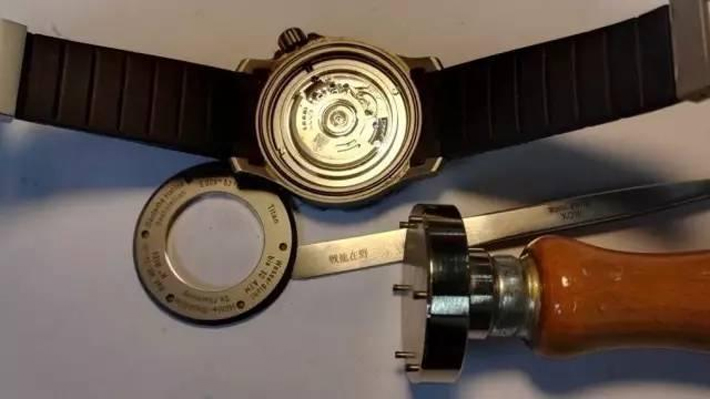

维修保养流程
详细流程
外壳
外壳的清洗通常用超声波清洗的方法，去除肉眼看不到的残留污渍；另外确保可活动外圈转动的灵活。对于按扣、把头、底盖消耗的硅脂，适量添加，更换老化的防水胶圈，以保证防水效果。
机芯拆洗和装配
机芯的处理是维修中的重中之重，可以分为拆、洗、装三个模块。 “拆”，就是检查有问题的零件，更换磨损配件和残缺变形的螺丝。 “洗”的时候，需要使用120#溶剂汽油，经过两洗一漂的步骤，再 通过10倍寸镜仔细查看有无残留污渍，检查宝石轴眼是否明亮，轴 榫是否光亮无磨损，最后放到烘炉以50度中温烘干，此时机芯就会 变得光洁如新。
加油

加油不是洗油，也不是只加单一的一种油。油量的多少，什么部 分加件油，先加后加都有严格的规定。加的“油”一般是以下4种： 油膏，稠油，稀油，马叉油。油量不能高于石碗1/2。碗边轴心不挂 油，零件除接触面外都不能有油，如此才能确保零部件的润滑和美 观。对于特殊的品牌要求，还得按品牌的要求来。
调校
对于维修来说，4个方位的调校就已经能够确保走时的准确度。 要求是手表面上、面下摆幅要达到280以上，3、6、12字向下时， 摆幅要在260以上。正10秒内，偏振0.2内，线条紧凑清晰。
字面、针
字面不能发生偏移，三针与字面平行间距相等，时、分相差不大 于3分，45分~0分完成换历。整个字面的处理要做到：针无尘，无 新增划痕、指印。新表要做到无痕拆装。这些看似小事，但都要求 修表师需要具备高度的职业素养和耐心。
机芯装配检查
在拧紧螺丝的时候，需要严格按照螺丝刀和螺丝钉的大小适应比 例使用，以确保螺丝孔不能有划痕，螺丝头不能刮花，夹板干净无 尘无印。
装壳
来到装壳这一步，意味着即将完成硬件上的装配。在装壳时要保 证固定机壳的装置平稳有效，把芯对准把管，不能发生偏移，秒针 与面盖要有安全距离。自动陀不刮碰表壳底盖，底盖螺丝无污渍。 旋入顺滑无缝隙。
自传仪检查
最后将手表置于自传仪上进行检查，观察手表是否可以在自转的 情况下保证36小时以上的完美运行。
整壳外观检查
整壳外观检查是手表交回到客户手中的最后一步，虽然马上要大 功告成，但也必须做到确认手表表壳、表带的干净，再次查看底盖 是否紧实无缝，表耳盖是否紧贴表头，按扣开关是否安全容易操作， 把头上条拨针力度适中，不能有变形的生耳。检查完毕后，一枚带 2892机芯的手表就重新焕发新的活力了。